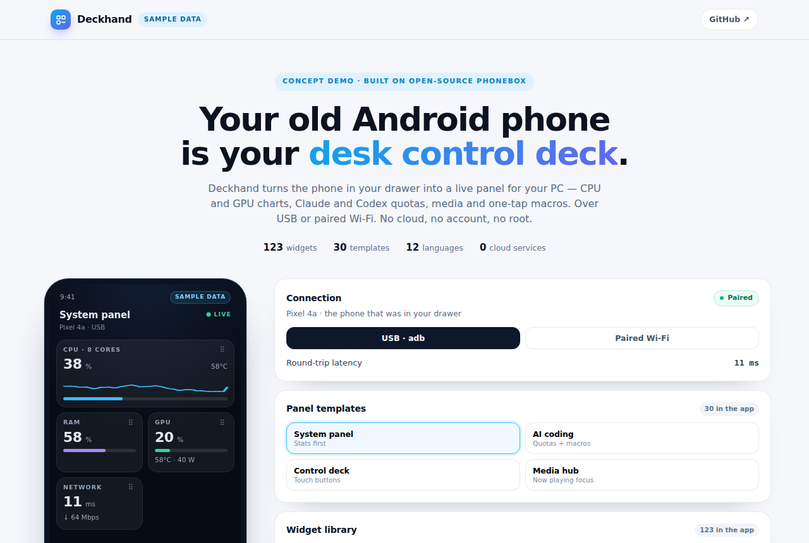

PhoneBox turns an old Android phone into a PC control deck
ersinkoc/phonebox · ProductivityMIT⭐ 3,010

PhoneBox (ersinkoc/phonebox) is an MIT-licensed project that turns an old Android phone into a full-screen desk panel for Windows, Linux, and macOS. It pairs an Android app with a small desktop agent, and you build layouts in a browser-based visual editor. Per the README, it ships with 123 widgets and 30 templates covering CPU/GPU/RAM stats, Claude and Codex usage quotas, media controls, Home Assistant, webhooks, and system shortcuts. The phone connects over USB with adb, or over Wi-Fi with a QR pairing flow. No root, no account, no cloud dependency.
It's taking off because it solves a real desk problem with hardware people already own: a Stream Deck alternative that costs nothing and shows live data a physical deck can't. The AI-coding widgets are well-timed — Claude Code and Codex users want quota, session, and permission-prompt visibility without alt-tabbing. The demo is visual and easy to share, which explains the recent star spike.
Where the product opportunity sits is in removing the rough edges. Right now the APK is sideload-only, the setup is curl | bash or irm | iex, and Windows builds are unsigned while a SignPath application is pending — SmartScreen will scare off non-developers. A signed installer, a curated template marketplace, and a hosted layout sync service could turn this into a paid product. The open-source core stays free; the money is in setup convenience and templates.
Today's top 5
| # | Repo | Buzz | Startup | Overall |
|---|---|---|---|---|
| 1 | ersinkoc/phonebox | 8.33 | 6.6 | 7.56 |
| 2 | storytold/craft-anything | 8.67 | 6.85 | 7.17 |
| 3 | CzzzzzzJ/mdldm-maitian | 6.33 | 7.7 | 7.17 |
| 4 | Immortal-Protocols/lastbook | 7.67 | 6.0 | 7.0 |
| 5 | tangerineturtle1/NX2navi | 8.33 | 5.9 | 6.87 |